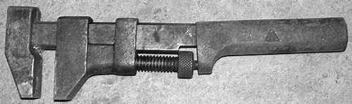
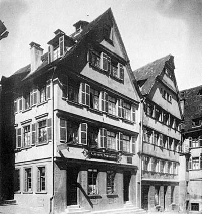
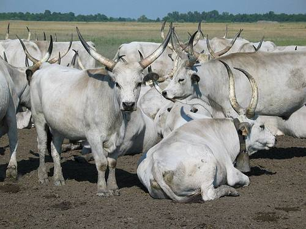

Chapitre 6
[[ Note du Traducteur : Thomas Stevens est le premier cycliste à avoir fait le tour du monde ; par la même occasion il est le premier cycliste à avoir traversé les Etats-Unis d'océan à océan. ]]
Quelques mots du traducteur : ce sixième chapitre relate la traversée de l'Allemagne, l'Autriche et la Hongrie. J'ai particulièrement apprécié la partie très vivante relatant la traversée de la Hongrie.
Allemagne, Autriche et Hongrie
Nonobstant le fait que l'Alsace était territoire français il y a seulement quatorze ans en arrière (1871) [[ Ndt : par le traité de Francfort signé le 10 mai 1871, qui met fin à la guerre franco-allemande de 1870-1871, l'Empire allemand annexe l'Alsace. Les territoires allemands annexés redeviennent français en 1919 après la ratification du traité de Versailles. Source https://fr.wikipedia.org/wiki/Alsace ]], la différence notable chez ses habitants et en même temps la plus satisfaisante pour moi, c'est leur grande supériorité linguistique sur les gens du côté français de la frontière. Je ne m'attarde qu'environ une trentaine de minutes à Sarrebourg [[ Ndt : dans le texte original, Stevens écrit Saarburg ; il s'agit de la ville de Sarrebourg annexée par l'Empire allemand en 1871 et redevenue française en 1919. En 1885, année du passage de Stevens, elle comptait près de 3900 habitants. Saarburg en Allemagne actuelle est une autre ville. Source https://fr.wikipedia.org/wiki/Sarrebourg ]], mais par deux fois des autochtones s'adressent à moi dans ma langue ; et à Phalsbourg [[ Ndt : Pfalzburg dans le texte original ; il s'agit de Phalsbourg. Annexée par l'Empire allemand en 1871 et redevenue française en 1919, comme le reste de l'Alsace-Moselle. Environ 3600 habitants lors du passage de Stevens. Source https://fr.wikipedia.org/wiki/Alsace-Moselle ]], une ville plus petite, où je reste pour la nuit, je retrouve cette même caractéristique.
Sarrebourg
M'étant bientôt avancé sur une trentaine de kilomètres en territoire allemand, je dois cependant me confronter à quelque chose qui ne m'est jamais arrivé en France ; un charretier insolent, dont les chevaux sont arrêtés en travers d'un chemin étroit dans les faubourgs de Sarrebourg, refuse de déplacer les chevaux de tête pour me permettre de passer à côté, ce qui m'oblige à descendre de bicycle. A l'approche de Phalsbourg on voit partout des soldats en manoeuvre, des soldats à l'entraînement au tir et dans tous les sens des compagnies de soldats en train de défiler ; bien qu'il y ait moins de battements de tambours et de sonnneries de trompettes que dans les villes de garnison française, on tourne rarement un coin de rue sans entendre le pas cadencé d'une compagnie militaire qui s'éloigne ou qui approche. Ces troupes allemandes marchent d'un bon pas et avec une rigueur professionnelle, contrairement aux françaises qui semblent toujours se déplacer d'un pas fatigué et abattu ; mais les pantalons trop larges et plutôt informe des Français sont probablement responsables, en partie, de cette impression [[ Ndt : peut-être Stevens se réfère-t-il ici au pantalon des zouaves ]]. On ne peut pas regarder ces solides soldats allemands sans la conviction que, en cas de guerre farouche, ils ne seraient inférieurs qu'à nos propres soldats.
A la petite auberge de Phalsbourg les gens semblent comprendre et anticiper les particularités gastronomiques d'un Anglais, et pour la première fois depuis mon départ de l'Angleterre, au dîner je me retrouve face à un excellent steack et à un thé.
Phalsbourg
Il pleut le lendemain matin alors que je roule sur les collines vers Saverne, une ville nichée agréablement dans une petite vallée au-delà de ces sombres coteaux qui constituent la limite est de la vallée du Rhin. La route est bonne, mais vallonnée, et pendant plusieurs kilomètres, avant d'atteindre Saverne, trace tortueusement et abruptement son chemin dans les forêts de pins, au bas des coteaux qui constituent la limite de la vallée. La vallée, où des villages agréables sont dispersés çà et là, se déploye comme une image merveilleusement belle, les ruines de plusieurs vieux châteaux sur les collines avoisinantes ajoutant au charme, ainsi qu'un certain romanesque.
Saverne
Il tombe une pluie torrentielle alors que je roule dans Saverne [[ Ndt : de 1871 à 1918 Saverne est annexée à l'Empire allemand. Environ 6900 habitants lors du passage de Stevens. ]]. Je m'arrête assez longtemps pour gratifier de ma clientèle un salon de coiffure ; aussi pour me procurer une petite clé supplémentaire pour mon outillage. Je présente ma clé anglaise nickelée dans ce qui resssemble à une quincaillerie et je demande au propriétaire s'il a quelque chose de semblable [[ Ndt : la clé anglaise (monkey wrench en anglais) a été brevetée en 1841. Sources https://en.wikipedia.org/wiki/Monkey_wrench | https://goo.gl/SmMhBV ]]. Il l'examine avec un vif intérêt, car, par rapport aux outils grossiers qui constituent son stock en magasin, la clé est comme un ressort de montre comparé à un fer à cheval. J'achète un outil rudimentaire qui aurait pu être façonné sur l'enclume d'un forgeron de village.
Monkey Wrench du début du 20ème siècle

De Saverne, ma route mène à une autre dépression et descend dans la magnifique vallée du Rhin, qui sur une courte distance à travers un défilé étroit me rappelle un canyon dans les contreforts de la Sierra Nevada ; mais cette route large et en bon état, recouverte seulement d'une pellicule de boue après la pluie de ce matin, fait que cette comparaison ne puisse être complètement entérinée par un cycliste. De vastes et superbes vignobles cultivés en terrasse marquent la sortie est.
La structure des routes de ce pays est suffisamment robuste pour n'importe quel véhicule ; mais une certaine proportion d'argile dans leur composition forme une pellicule glissante par temps pluvieux. J'entre dans le village de Marlenheim [[ Ndt : porte d'entrée nord de la route des vins d'Alsace (inaugurée en 1953). environ 1480 habitants lors du passage de Stevens. Source Wikipedia ]] et j'observe le premier nid de cigogne, construit au dessus d'une cheminée, que j'aie vu en Europe à ce moment, mais j'en verrai des quantités plus avant. Le parent cigogne est perché solennellement sur son jeune enfant, dont on pourrait supposer qu'il terminera séché par l'enfumage.
Marlenheim autrefois
Peu après Marlenheim, je distingue dans la brume la fameuse flèche de la cathédrale de Strasbourg, dressée avec évidence au-dessus de tout le reste dans la large vallée ; et à 13h30 Je traverse l'arche massive de la porte qui fait partie des fortifications de la ville, et je parcours les rues larges mais pavées grossièrement, certainement les choses les plus boueuses de tout Strasbourg. Les fortifications entourant la ville sont manifestement strictement destinées a cette fonction, et pas le moins du monde à un observateur extérieur. La gare est l'une des plus belles d'Europe, et parmi d'autres améliorations remarquables on distingue les tramways à vapeur [[ Ndt : La gare dont parle Stevens est la gare centrale inaugurée en 1883. C'est un des premiers édifices entrepris après le rattachement de l'Alsace-Lorraine à l'Empire allemand ; elle est l'oeuvre de l'architecte allemand Johann Eduard Jacobsthal. Pour ce qui est du tramway à vapeur, c'est à partir de 1880 que celui-ci est mis en service. Source Wikipedia et Strasbourg-tramway http://www.strasbourg-tramway.fr/urbain.html ]].
La gare de Starsbourg en 1920
Tramway à vapeur à Strasbourg, vers 1896
Source : Développement durable en France et en Allemagne ; Projet pour la promotion du binlinguisme dans l'enseignement sur cette page
Parcourant la ville, je suis impérativement sommé de descendre du trottoir par un policier ; quand je m'arrête auprès d'un Strasbourgeois d'allure respectable pour me renseigner sur la route pour Appenweir, un individu avec un seul œil et une calotte militaire trois tailles trop petites offre ses services. Après m'avoir interrogé, "Appenweir? Anglais?" Il fait demi-tour sur lui-même avec une précision militaire - sans doute empreint de l'autorité surnaturelle que lui confère sa coiffure - et me fait signe de le suivre. Ne voyant pas meilleur sort à espérer j'obéis, et après avoir enfilé le labyrinthe d'une douzaine de rues, composées de bâtiments allant de l'architecture pleine de pignons et plutôt pittoresque des temps médiévaux au modernes façades en grès rouge, il me reconduit à l'extérieur des fortifications, me désigne la route d'Appenweir, et après avoir touché sa calotte et salué de la main avec une formalité solennelle, retourne en ville.
Après avoir traversé le Rhin sur un pont à pontons, je roule sur du plat et heureusement des routes plutôt moins boueuses, à travers les villages agréables des alentours, près d'un desquels je rencontre une compagnie de soldats ayant quitté leurs uniformes et étendus avec insouciance le long de la route, comme s'ils revenaient d'une randonnée à la campagne. Au fur et à mesure que j'approche d'eux, pédalant laborieusement contre un fort vent de face, moi-même et la bicyclette en partie couverts de jaune à cause de l'argile, les officiers et les soldats commencent à rire de bonne humeur et une douzaine d'entre eux entonnent en chœur "Ah! Ah! L'Angliche!" [[ Ndt : le terme dans le texte original est Englander, qui signifie Anglais, et qui peut avoir selon le contexte un sous-entendu péjoratif ]] et comme je réponds par un "Yah! Yah!", et souris en passant à leur hauteur, les rires et les plaisanteries fusent tout au long de la compagnie. La vue d'un "Angliche" dans une de ses expéditions aventureuses est une source de franc amusement pour l'Allemand moyen, qui, alors qu'il ne peut s'empêcher d'admirer ce qui le motive, ne peut comprendre le plaisir qu'il peut y trouver. L'Allemand moyen préfère se prélasser, en sirotant du vin ou de la bière et en fumant des cigarettes, plutôt que s'astreindre à traverser un continent à bicycle.
A quelques miles à l'est du Rhin une autre forteressse inébranlable se dresse sévèrement au-dessus d'un village paisible et de vertes prairies, et là-bas à droite, il y en a encore une autre; bien sûr, cette frontière franco-allemande est un vaste camp militaire, avec des forts, des soldats et des munitions de guerre partout! Quand j'ai traversé le Rhin, j'ai quitté la Basse-Alsace [[ Ndt : partie nord de la région historique d'Alsace ; de 1871 à 1918 c'était le nom de la subdivision centrale de l'Alsace-Lorraine au sein de l'Empire allemand. Source Wikipedia ]], et j'entre maintenant dans la région du Rhin moyen [[ Ndt : section du Rhin limitée par Bingen en amont et Bonn en aval ]], où les villages sont de pittoresques grappes de petites maisons à pignons contrastant avec les anciennes constructions grossières et surannées en pierre des villages français. La différence s'étend aussi aux habitants ; les paysannes de France, par réserve réelle ou affectée, affectent généralement ne rien remarquer d'extraordinaire quand je passe à bicycle, mais en regardant en arrière, on les verrait presque toujours arrêtées et contemplant avec un intérêt indubitable ma silhouette s'éloignant ; par contre les femmes de ces villages du Rhin éclatent de rires joyeux.
Traversant sur une bonne route le village d'Oberkirch [[ Ndt : village allemand, à environ 20 kilomètres de Strasbourg ; environ 3000 habitants lors du passage de Stevens ]], je décide de rester pour la nuit, et la première chose que j'entreprends est de débarrasser le bicycle de l'argile qui le recouvre. Avec un air embarrassé le valet d'écurie vient faire un tour à plusieurs reprises et me regarde faire en jetant des regards franchement désapprobateurs, pensant sans doute que je le nettoie moi-même au lieu de le laisser le laver avec un balai, dans le seul but d'échapper à l'inévitable pourboire. Le propriétaire connait quelques mots d'anglais. Il passe sa tête chauve par la fenêtre de l'étage et demande : "vous être Monsieur Stevens ?"
"Oui, oui," réponds-je.
"Allez-vous autour le monde?"
"Oui ; je vais autour le monde."
"Je lire au sujet de vous dans journal."
"Ah, vraiment ! Quel journal ?"
"Die Frankfurter Zeitung. Vous allez autour le monde."
Le patron semble ravi d'avoir pour hôte l'homme qui va "autour le monde" et propage la nouvelle. Pendant la soirée, plusieurs personnes d'importante position sociale passent pour jeter un coup d'oeil curieux sur moi et mon véhicule.
Mes genoux moites, du fait de rouler avec des jambières en cuir, me font rechercher le réconfort du feu de la cuisine dès mon arrivée. Après avoir écouté le bavardage incessant de la cuisinière pendant quelques instants, je me dispense tout à coup de toute pantomime et demande en pur anglais le privilège de sécher mes vêtements dans la paix et la tranquillité devant le foyer de la cuisine. La pauvre femme se dépêche, et revient bientôt avec son maître qui prend l'affaire à coeur, et, comprenant la situation, me propose immédiatement le prêt de ses pantalons du dimanche pour la soirée ; offre que j'accepte volontiers, malgré notre grande différence de taille, le patron étant, parlant de volume, une personne très importante.
Oberkirch est un joli village à l'entrée de la vallée étroite et charmante de la rivière Rench, le long de laquelle mon chemin mène vers les hauteurs de la Forêt-Noire. Quelques miles plus loin dans la vallée, je roule à travers un petit village qui se niche au sein du plus bel environnement que j'aie jamais vu. Des sapins sombres et froncés mêlés au vert plus léger d'autres végétaux couronnent les éperons environnants de la montagnes Kniebis [[ Ndt : montagne de la Forêt-Noire, qui culmine à 960 mètres ]] ; des vignobles, des petits champs de seigle qui ondulent et des prairies vertes couvrent les pentes les plus basses d'une élégance panachée, au pied desquelles se blottisssent des groupes de maisonnettes au milieu de vergers épars d'arbres fruitiers en fleurs. Le luth [[ Ndt : instrument à cordes pincées, voisin de la guitare ]] joyeux des éleveurs dans la montagnes, le chant des oiseaux et le courant vif des torrents de montagnes remplissent mélodieusement l'air frais du matin. Dans tout ce pays, il y a partout des pommiers, des poiriers, des cerisiers. A la saison des fruits, on ne peut pas ouvrir la bouche dehors sans que la déesse Pomona [[ Ndt : nymphe (divinité subalterne) des fruits dans la mythologie romaine ]] apparaisse sous la forme d'une délicieuse bouchée. Les avenues de peupliers de France sont loins, mais la route est fréquemment ombragée pendant des miles par des arbres fruitiers. Je n'ai jamais vu avant un endroit aussi charmant et en tout cas pas combiné avec une route presque parfaite pour un cycliste. Ma route passe par Oppenau et Petersthal - cette dernière d'importance grandissante en tant que station balnéaire, plusieurs hôtels de luxe avec piscine, eaux minérales, etc., déjà préparés à recevoir l'afflux anticipé de visiteurs en quête de santé et de bien-être pour l'été qui arrive - et puis monte, monte, monte, parmi les pins sombres jusque sur les montagnes de la Forêt-Noire. J'ai progressé lentement mile après mile sur la forte pente, suivant la rivière Rench [[ Ndt : rivière allemande, affluent de la rive droite du Rhin ]] jusqu'à sa source. Bientôt toute la route que j'ai parcourue dernièrement est visible loin en-dessous, serpentante et sinueuse sur les versants de la montagne. Des groupes de paysannes basanées portent sur leurs têtes des paniers de pommes de pin aux villages en bas. À distance, la vue de leurs robes rouge vif parmi le vert sombre des pins suggère les fées dont la légende a peuplé la Forêt-Noire.
J'atteins enfin le sommet, où deux bornes signalent au voyageur que sur cette crête boisée il passe de Bade à Würtemberg [[ Ndt : le pays de Bade et le royaume de Würtemberg faisaient partie de l'Empire allemand depuis janvier 1871 ]]. Sur des miles la descente est agréablement fluide et progressive ; le souffle léger de l'air de la montagne, chargé de l'odeur de pin, me rafraichit ; le paysage est typique de la Forêt-Noire, et qu'est-ce qu'on pourrait souhaiter d'autre que cette heureuse conjoncture ?
Une fois arrivé à Freudenstadt vers midi, la route montagneuse, l'air vivifiant et la fragrance des pins font que je donne aux bonnes gens à l'auberge un exemple impressionnant des effets du cyclisme sur l'appétit humain. Dans chaque ville et village que je traverse dans le Würtemberg toute la population juvénile se rassemble autour de moi en un temps record. L'impulsion naturelle du petit garçon allemand semble être de se mettre à courir après moi en criant et en riant sans retenue, et en passant par certains des plus gros villages, il n'est pas exagéré de dire que j'ai eu deux cents petits Allemands, bruyants et démonstratifs , qui claquaient bruyamment leurs lourds sabots de bois en me suivant.
Freundenstadt en 1900
Source Wikipedia
Le Würtemberg, par cette route tout au moins, est décidément une région montagneuse, et les routes sont très inférieures autant à celles d'Angleterre que de France. Je peux, parfois, progresser lentement dans des hauteurs boisées conduisant à une petite vallée, puis, plusieurs kilomètres sur une route de campagne irrégulière et pierreuse sont suivis d'une descente longue et pas toujours facile dans une autre petite vallée, ce programme répété plusieurs fois constituant le trajet de la journée. Les petits villages paysans sont généralement sur les hauteurs, mais les villes plus grandes sont invariablement dans les vallées, entourées par des élévations boisées, et perché parmi des escarpements des plus inaccessibles on voit fréquemment les ruines d'un vieux château. Beaucoup de jeunes garçons de huit ou dix ans sont en train de casser des pierres au bord des routes, ce qui m'étonne plutôt car en Allemagne il y a une loi sur l'éducation obligatoire ; mais peut-être qu'aujourd'hui est un jour de congé ; ou peut-être qu'après les horaires scolaires il est habituel pour ces gosses infortunés d'entretenir les bas-côtés et de couvrir leurs mains d'ampoules en brisant des pierres.
Affamé comme un requin-scie [[ Ndt : Le texte original dit 'Hungry as a buzz-saw' ; buzz-saw est une sorte de surnom de l'helicoprion - terme qui signifie scie en spirale - sorte de requin qui vivait il y a 300 millions d'années et dont les dents de la mâchoire inférieure étaient disposées en "scie circulaire" (buzz-saw). Source : eartharchives.org https://goo.gl/GcRZBr ]] j'arrive dans la vieille ville endormie de Rothenburg à six heures du soir, et, retrouvant des forces à l'hôtel principal, je commande le souper [[ Ndt : Rothenburg est une ville de Bavière qui comptait environ 7000 habitants lors du passage de Stevens. Elle est demeurée à peu près dans son état depuis la Renaissance. ]]. Plusieurs serviteurs de divers degrés d'inutilité viennent et s'inclinent obséquieusement de temps en temps, pendant que je suis là assis espérant que le souper arrive d'une minute à l'autre. A sept heures le serveur arrive et étend la nappe ; à 7.15 il apparaît de nouveau, cette fois avec assiette, couteau et fourchette, faisant tant et plus de courbettes et de tintamarre en les disposant sur la table. Une autre demi-heure passe, quand, remarquant sans aucun doute mon impatience grandissante vu qu'il vient par intermittence pour fermer un volet ou régler le gaz, il apporte un petit journal illustré et le dépose devant moi. J'ai très envie de le lui faire avaler, mais me résignant à ce qui semble être inévitable, j'attends et j'attends, et à 8.15 précises il sert l'assiette de soupe ; à 8.30 on apporte la côtelette de veau et à 8.45 une petite assiette de gâteaux assortis. Au cours du repas je demande un autre morceau de pain, j'observe alors des mouvements pressés, s'ensuit le bruit d'une course précipitée le long des corridors de pierre du vieil édifice plein de recoins et dix minutes plus tard on me sert un petit pain. A l'opposé de la longue table sur laquelle je suis en train d'écrire, une demi-douzaine d'honorables patriarches de Rothenburg profitent de ce qu'ils considèrent sans aucun doute comme un "moment échevelé." Chacun a devant lui une énorme chope de bière mousseuse et celui qui sans conteste savoure le plus ce moment provoquant avec succès l'envie et l'admiration de ceux qui l'entourent est un personnage massif assis depuis des heures dans un état comateux, maintenant une longue pipe de porcelaine presque sur le point de tomber et engloutissant une impressionante gorgée de bière toutes les quinze minutes. Sans un clignement de paupières de temps en temps et le passage régulier de la chope à ses lèvres, il serait difficile de dire s'il est éveillé ou assoupi, l'action de fumer étant à peine perceptible à vue d'oeil. [[ Ndt : des centaines de milliers de pipes en porcelaine ont été fabriquées du milieu du 16eme siècle jusque dans les années 1920, notamment en Allemagne, et en quantité moindre en France, Autriche, Danemark et Hollande. Un pic de production a eu lieu en Allemagne pendant la guerre Franco-Prussienne de 1870, quand les fabriques ont produit des pipes à motifs militaires (dites pipes de réservistes) ; des tasses, des assiettes, des chopes ont également été peintes avec ce type de motif. En-dehors de ces pipes de réservistes, les fourneaux des pipes de porcelaine étaient peints de motifs inspirés des arts, de la nature, de la vie quotidienne etc... Ref : The Porcelain Pipe: A Smoker's Nightmare https://goo.gl/QcHkEb ; The Tobacco Pipe Artistory https://goo.gl/3ojNJn ; Porcelain: The Illustraded Pipe https://goo.gl/obgk3T ]]
Exemple de pipe allemande en porcelaine
Source : https://www.tabak-boerse24.de
Au matin je suis préoccupé comme on l'imagine de commander quoi que ce soit pour déjeuner, de crainte de devoir attendre jusqu'à la mi-journée, ou presque, avant d'être servi ; aussi après avoir reçu avec indifférence plusieurs autres courbettes, plus déférentes et profondes que celles d'hier soir, je roule douze kilomètres jusqu'à Tübingen pour le petit-déjeuner.
Maisons à Tübingen en 1885

Source Wikipedia
L'après-midi il pleut de temps en temps et après environ trente-cinq kilomètres dans une zone montagneuse il commence à pleuvoir à torrents, ce qui me contraint suivant l'exemple de quelques paysans à trouver refuge dans l'épaisseur d'une pinède. Nous en sortons bientôt et après avoir endossé mon imperméable léger en caoutchouc je pousse vers Alberbergen, où je me réconforte entre autres de pain de seigle et de lait pendant que le temps passe jusqu'à trois heures, quand, la pluie cessant, je prend la route dans la boue pour Blaubeuren.
Blaubeuren, dans les années 1930
Le dimanche matin je roule le long de la belle vallée d'un des affluents du Danube, pédalant au son des cloches de Blaubeuren. Après avoir attendu jusqu'à dix heures, en partie pour permettre aux routes de sécher, j'avais décidé de ne pas attendre plus longtemps et j'ai pris la route vers la grande et très belle ville d'Ulm. Le caractère de la région change maintenant et avec lui également le caractère de la population, qui en vérité semble avoir calqué ses caractéristiques sur celles de la région qu'elle habite. Ma route à l'est de Blaubeuren suit une étroite vallée sinueuse le long des clapotis du cours supérieur du Danube, dix-huit kilomètres de route de qualité variable m'amènent à la ville puissamment fortifiée d'Ulm, le site où j'aurais dû arriver hier, n'eût été l'inclémence du temps et d'où je passe du Würtemberg en Bavière [[ Ndt : Le Danube traverse la ville d'Ulm. En 1865 le roi Louis II de Bavière élève au rang de ville la partie située en Bavière sous le nom de Neu-Ulm, la partie située dans le Würtemberg gardant le nom de Ulm) ]]. Sur les plateaux peu attrayants du centre du Würtemberg on cherche en vain chez les paysannes une mine séduisante ou une silhouette gracieuse, mais dans les vallées souriantes de Bavière les femmes, bien que de silhouettes exagérément corpulentes, n'en affichent pas moins une certaine grace ; et bien que loins de l'idéal américain ou anglais de la beauté, elles en sont plus proches que leurs semblables de la région du Würtemberg que j'ai traversée. Je m'arrête juste quelques minutes à Ulm pour goûter un gobelet de sa bière et me renseigner sur la route d'Augsburg, laps de temps suffisant cependant pour que me retrouve objet d'une curiosité non des moindres de la part des autochtones, car la renommée de mon défi s'est répandue à Ulm.
Les routes de Bavière n'ont pour mérite que la fermerté de leur surface, sinon elles seraient tout simplement abominables, la conception bavaroise de la construction de routes consistant manifestement à recouvrir toute leur surface de cailloux en vrac. Le cycliste est contraint de suivre pendant des miles des voies étroites détériorées par le passage des véhicules, d'esquiver sans cesse des cailloux ou sinon de pédaler avec précaution le long des bas-côtés. Je suis en train de rouler maintenant dans la plus grande région de buveurs de bière et de mangeurs de saucisses du monde ; les champs de houblon sont un élément saillant du paysage et de longues rangées de saucisses pendillent derrière presque chaque fenêtre. Les quantités de ces aliments que je vois consommées tous les jours sont quelque chose de stupéfiant, même en tenant compte des festivités des vacances de Pentecôte qui entraînent une augmentation de la consommation.
Des mélodies jouées par des intruments de musique montent du fond de la vallée de la Lech [[ Ndt : vallée dont la plus grande partie se trouve dans le Tyrol ; la rivière Lech coule en Allemagne et en Autriche ]] pendant que, vers le soir, j'approche des beaux environs d'Augsbourg et roule le long de plusieurs Biergarten [ brasseries de plein air ], où sont réunies des foules joyeuses d'Augsbourgeois buvant à longs traits des bières mousseuses, mangeant des saucisses et savourant la musique des fanfares militaires.
Biergarten, vers 1893 ; tableau de Max Liebermann
Source Wikipedia
Roulant dans l'enceinte de la ville après avoir couvert cent-vingt kilomètres depuis les dix heures ce matin, je m'enquiers auprès d'un jeune homme d'allure prometteuse : "où se trouve le siège du Velocipède Club d'Augsbourg?" Le siège du club est un fameux biergarten dans les faubourgs au sud-est et prenant là quelque repos, j'y rencontre une personne obligeante qui parle anglais et qui accepte de bon gré la tâche d'interprète entre moi et le propriétaire du site. Assis parmi des centaines de soldats, de citoyens d'Augsbourg et de paysans de la région, et partageant avec eux le bonheur simple d'une chope mousseuse de bière locale, on m'informe que la plupart des membres du club célèbrent la fête de Pentecôte en faisant du tourisme dans la région, mais que je suis vraiment le bienvenu à Augsbourg ; on me conduit à l'Hôtel Mohrenkopf ( Hôtel de la Tête de Maure ), et on m'invite à me considérer l'invité du club aussi longtemps que je resterai à Augsbourg ; les Bavarois ont vraiment le sens pratique.
Mr. Josef Kling, le président du club, m'accompagne ce lundi matin jusqu'à Friedburg ; c'est le dernier jours des vacances et à ce qu'il semble les Bavarois se destinent à en tirer le maximum. Dans les faubourgs les biergarten sont déja remplis de gens, et sur une partie du trajet au sortir de la ville les routes sont envahies d'Augsbourgeois en vacances qui se dirigent vers les lieux de divertissements des environs alors que la paysannerie afflue des villages pour admirer la ville, avec des visages radieux à l'idée des quantités de bière à portée. Environ un sur dix des Augsbourgeois de sortie porte un accordéon ; quelques-un sont en train d'en jouer joyeusement tout en marchant, d'autres portent simplement les leurs en pensant béatement aux bons moments à venir sous peu, et une majorité prévoyante transporte sur le dos de grands parapluies à bandoulière. Musique et chants se font entendre de tous côtés ; nous roulons ensemble dans un silence imposé par l'ignorance de chacun de la langue de l'autre, partout où on regarde des gens au vêtements et aux visages de vacanciers vont çà et là.
Un air qui pourrait être joué à l'époque
Une partie des villageois portent des accoutrements impressionnants et magnifiques : les hommes sont vêtus de hautes bottes à revers, lustrées de la semelle jusqu'à la plus infime partie de cuir ; hauts chapeaux de feutre noir, en général ornés d'une plume de paon de près d'un mètre de long piquée dans le ruban, dont la tige dépasse à l'avant et l'extrémité emplumée à l'arrière ; leurs vestes et leurs gilets sont ornés de longues rangées de larges boutons antiques. Je me trouve maintenant dans le district de Souabe, et ces boutons qui sont un élément si voyant de ce vêtement de vacances sont constitués de pièces d'argent, il n'est pas rare qu'ils aient été transmis de génération en génération depuis plusieurs siècles, s'agissant en fait de biens familiaux. Les robes des villageoises souabes sont pittoresques à l'extrême : des robes des plus fines et ce couvre-chef prodigieux de cuivre, argent ou or - le Schäbische Bauernfrauenhaube (chapeau de fermière souabe) - lui aussi, à l'instar des boutons des hommes, un bien familial. On me dit que certaines de ces superbes robes antiques ne contiennent pas moins de quarante-cinq mètres de tissu épais, rassemblés plissés et pliés perpendiculairement d'innombrables fois, générablement sur une épaisseur de trente centimètres, donnant à la forme ainsi emballée un aspect exagérément volumineux et courtaud. La ceinture des robes se trouve haut dans la régions des omoplates ; le haut des manches est également élargi à des proportions étonnantes.
Vraisemblablement le type de robe décrit par Stevens
Coiffe de femme
Autre type de coiffe de femme
La journée est des plus agréables, les champs sont déserts, les routes et les villages sont animés par les villageois profitant des vacances. Dans chaque village un un grand mât est érigé et décoré du bas jusqu'en haut de petits drapeaux et des guirlandes de circonstance. les petites églises de pierre et les cimetières adjacents sont remplis de fidèles qui chantent en choeur solennellement ; pas si occupés par leurs devoirs religieux et leurs préoccupations spirituelles cependant, au point de se retenir d'attirer les uns les autres l'attention sur moi au moment où je passe à bicycle, allongeant le cou pour mieux me voir, et à une occasion un fidèle trop curieux me fait même signe de stopper tout en chantant et agitant la main en même temps.
Ma route passe maintenant au travers de forêts de pins sombres ; là je rejoins une procession d'une cinquantaine de villageois, hommes et femmes chantant à tour de rôle en une étrange harmonie en avançant d'un pas lourd le long de la route. Les hommes vont têtes nues, leurs chapeaux à la main. La plupart des femmes sont pieds nus, d'autres ont aux pieds des chaussettes aux motifs superbes ; aucune ne porte de chaussures. Toutes les couleurs de l'arc-en-ciel sont présentes dans leurs costumes respectifs et chacun porte sur le dos un grand parapluie à bandoulière ; ils progressent a un rythme plutôt rapide et tout considéré il y a quelque chose à la fois bizarre et fascinant dans cette scène : la psalmodie et le cadre. Les vêtements multicolores des femmes sont le seul élément lumineux dans la monotonie des sapins sombres. Finalement quand je les dépasse, l'inoubliable expression d'intérêt sur les visages des hommes et les impeccables rangées de dents affichées par les femmes trahissent l'objet de leur attention.
A l'approche de midi j'arrive à l'ancienne ville de Dachau, et pendant que je me restaure à l'auberge, un particulier avec un col en papier de déjà une semaine d'usage, en harmonie avec son allure générale, s'avance et s'adresse à moi dans un excellent anglais et durant l'heure du repas répond à diverses questions sur la région et les autochtones en faisant montre de tant d'intelligence, qu'en prenant congé je lui offre généreusement le petit pourboire habituel en la circonstance en Allemagne. [[ Ndt : Dachau est une ville du sud de l'Allemagne, en Haute-Bavière, fondée vers le IXe siècle. Elle compte environ 1500 habitants lors du passage de Stevens (45000 de nos jours). Ce village bucolique alors attire de nombreux peintres paysagistes au début du 19eme siècle. D'environ 1880 jusqu'a 1914 Dachau sera le siège d'une communauté d'artistes de toute l'Europe, en particulier des peintres de la vie rurale et paysagistes. De nos jours, si elle est mondialement connue c'est pour le camp de concentration qui y fut établi en mars 1933. Ref : Dachau European Artist Colony https://goo.gl/fXX1gc ; Dachau Art Colony (Wikipedia) https://goo.gl/28ihKw ]] -- [[ Ndt : le col (détachable) en papier (en papier cartonné) pour chemise aurait été inventé en 1827 à New York. Il permettait d'avoir un col propre sans avoir à soumettre la chemise à un lavage inutile... Selon les classes sociales il était changé journellement ou utilisé jusqu'à être délabré. Ces cols étaient jetés après usage. Ils étaient très employés entre autres par les serveurs. Il existe encore de nos jour une entreprise (Amazon Drygoods, depuis 1866) qui fabrique et commercialise de tels cols. Ref : Victorian Passage Into Time https://goo.gl/R8sjFr ; Amazon Drygoods https://goo.gl/Gic4LP ]]
Un exemple de col en papier
"Non, je vous remercie, très sincèrement," répond-il, souriant et secouant la tête. "Je ne suis pas un employé de l'hôtel comme vous le croyez sans doute ; je suis étudiant en langues vivantes à l'Université de Munich, je suis venu aujourd'hui pour visiter Dachau." Dans la salle plusieurs militaires en train de jouer au billard ont un sourire jusqu'aux oreilles devant le ridicule de la situation ; et je dois confesser que sur le moment je ressens l'envie de demander à l'un d'entre eux de tirer l'épée et de me provoquer avec obligeance à sortir de la pièce. Le désagréable souvenir d'avoir, par ignorance, offert un menu pourboire à un étudiant de L'Université de Munich me poursuivra pour toujours. Quoi qu'il en soit, je crois après tout que j'ai des circonstances atténuantes : il devrait changer de temps en temps son col en papier.
Dans l'heure qui suit midi je suis en train d'esquiver des silex éparpillés sur la route sans dénivelé qui me mène à travers la vallée de l'Isar vers Munich [[ Ndt : l'Isar est une rivière du royaume de Bavière (Etat allemand qui exista de 1805 à 1918 ; c'est maintenant un länder - un Etat fédéré.), affluent du fleuve Danube. Les cendres de plusieurs criminels de guerre nazis ont été dispersées dans la rivière Isar après leur exécution en 1946. Ref : Wikipedia https://goo.gl/VdGPE3 ; World War II Graves https://goo.gl/KBBsz2. ]] ; les Alpes tyroliennes se dessinent dans la brume, vagues et indistinctes au loin vers le sud, leurs pics neigeux me rappellent les Rocheuses [[ Ndt : chaînes de montagnes dans l'ouest de l'Amérique du Nord ]] où j'étais en train de rouler il y a exactement un an. Je suis en train de marcher dans les rues vers le centre de la capitale bavaroise quand une enseigne familière attire mon regard "American Cigar Store", tel un rayon de lumière pénétrant les ténèbres et le mystère des innombrables enseignes incompréhensibles qui sont autour, et je dirige aussitôt mes pas vers là-bas. A l'intérieur je trouve le propriétaire, Mr. Walsch, natif de Munich, qui, après avoir résidé plusieurs années en Amérique est rentré pour passer les dernières années de sa vie à rêver au milieu de la fumée des bons cigares et lamper la délicieuse bière ambrée que seule les brasseurs de Munich savent brasser [[ Ndt : il pourrait s'agir de la Emmerbier ou de la Dampfbier, deux bières ambrées allemandes originaires de Bavière. Ref : Wikipedia https://goo.gl/SnyB5A ; https://goo.gl/a7DW1A ]]. Et qui d'autre pouvait arriver à ce moment sinon Mr. Charles Buscher, un véritable américain, de Chicago, qui étudie l'art ici à l'Académie Royale des Beaux-Arts et se propose aussitôt pour me faire visiter Munich.
Le matin suivant à neuf heures, sous la direction de Mr. Buscher, je déambule dans les splendides galleries d'art. Nous visitons ensuite l'Académie Royale des Beaux-Arts, un bâtiment magnifique, construit pour un coût de 7000000 de marks [[ Ndt : ce qui correspond à environ 42000000 d'euros de nos jours. Source : historicalstatistics.org https://goo.gl/LF9RNb ]].
Nous nous restaurons à onze heures à la résidence royale notant à l'occasion une vétille due à l'excentricité notoire du roi Ludwig. En face du palais il y a une ancienne église, dont deux des quatre faces de l'horloge regardent vers les appartements du roi. Les aiguilles de ces horloges sont, d'après mon guide, en or. Il y a un certain temps maintenant le roi fit savoir que la vue de ces aiguilles en or choquait son regard et il donna l'ordre de les peindre en noir. Ce fut fait et de nos jours elles sont noires. Parmi les choses les plus intéressantes à voir dans le palace, il y a la chambre et le lit où Napoleon Ier a dormi en 1809 et que personne n'a occupé depuis ; le magnifique lit, un somptueux travail de satin rouge écarlate et rose, que quarante femmes ont tissé avec du fil d'or, pendant dix ans, jusqu'à ce que 1600000 marks furent dépensés.
La résidence royale en 1860 (bâtiment de gauche)
Source Wikipedia
Le lit dans la résidence royale de Munich
Source : residenz-muenchen.de https://goo.gl/aIs2pD
A l'une des entrées de la résidence royale, sécurisée par des barreaux d'acier, il y a un grand bloc de pierre qui pèse cent soixante cinq kilos ; au-dessus, trois gros clous sont plantés dans le mur, le plus haut de ces clous est à une hauteur de trois mètres cinquante ; les historiens bavarois ont gardé trace de ce que le comte Christophe, un géant célèbre, a lancé d'un seul pied cette pierre jusqu'à la marque indiquée par ce plus haut clou.
Après çà messieurs Buscher et Walsch me préviennent aimablement de ne pas considérer quitter la ville sans avoir visité la Königliche Hofbräuhaus (Brasserie de la Cour Royale) l'endroit le plus fameux de son genre dans toute l'Europe. Pendant des siècles Munich à été réputée pour l'excellente qualité de sa bière et il y a environ quatre siècles le roi fonda cette fameuse brasserie dans le but charitable de permettre à ses sujets les plus pauvres d'étancher leur soif avec une bière de la meilleure qualité, à des prix à portée de leurs moyens, et de génération en génération elle est demeurée la ressource favorite des amoureux de la bonne bière à Munich. En dépit de ce qu'elle demeure, trace du temps jadis, un endroit avec des bancs de construction grossière pour des postérieurs tout aussi rudes, des pièces sans séparation, avec des toiles d'araignées ornant les poutres et une allure générale délabrée ; en dépit de la nouveauté que sont les dizaines de brasseries modernes à ciel ouvert avec des palmiers ondulant au vent, des lampes électriques, de la musique militaire et toutes les améliorations modernes, la Königliche Hofbräuhaus est bondée jour et nuit de visiteurs assoiffés, qui pour la bagatelle de vingt-deux pfennings (environ cinq cents) obtiennent une chope de la plus fameuse bière de toute la Bavière.
"Munich est le plus grand milieu artistique du monde, le vrai foyer de l'univers des arts," m'assure Mr. Buscher avec enthousiasme alors que nous flânons ensemble dans les vieilles rues endormies, il désigne une petite partie lumineuse d'une vieille fresque, maintenant déjà partiellement effacée par les éléments et la compare avec les réalisations de ces dernières années ; il attire mon attention sur un détail d'une statue et bientôt me guide au restaurant et bar à bières [[ Ndt : il s'agit de la Königliche Hofbräuhaus précitée ; ce palais de la bière a été fondé en 1859 par le duc Guillaume V de Bavière. Le bâtiment d'origine, celui que visite Thomas Stevens, a été détruit en 1896 et reconstruit et agrandi avec le bâtiment contigu dans le style néo-renaissance. C'est dans cette brasserie que s'est tenu en 1920 le premier meeting important du parti ouvrier allemand, à l'origine du parti nazi, meeting ou Adolf Hitler fait adopter le programme du futur parti nazi. Ref : Wikipedia https://goo.gl/gMM3Hs ]] dans une ancienne pièce à voûte où il m'invite à détailler l'architecture et les fresques. Quant au bureau de douane de Munich c'est une superbe vieille église, qui serait soigneusement préservée telle une relique à l'intérêt et l'importance non négligeables dans des villes aux antiquités moins profuses, mais où ici sont empilés les paquets, les caisses et les sacs du monde du commerce.
La Königliche Hofbräuhaus originale (celle visitée par Thomas Stevens), détruite en 1896
Source Wikipedia domaine public
Intérieur de la Königliche Hofbräuhaus originale en 1892 ; tableau de Philip de László
Source Wikipedia domaine public
La brasserie actuelle, photo de 1903
Source Wikipedia domaine public
Intérieur d'une des salles de la brasserie actuelle
Source Wikipedia domaine public
Il ne faut pas manquer un autre élément notable de la vie munichoise, à savoir, les cochers. Contrairement à leurs homologues transatlantiques, ils apparaissent suprêmement indifférents à prendre ou non des passagers. Peu importe le moment où on arrive à une station, c'est un pari presque assuré qu'on y rencontrera neuf conducteurs sur dix en train de faire tranquillement un petit somme, étendus sur leurs hautes voitures, entièrement inconscients de leur environnement, et un étranger timide hésiterait presque à troubler leur sommeil. Mais l'automédon de Munich s'est endurci depuis longtemps à la tracassante procédure du réveil. Cette léthargie n'est pas répandue seulement dans les rangs du monde des cochers : au moins les deux tiers des transporteurs de marchandises qu'on trouve sur les routes par ici sont vautrés sur leur chargement, dormant tout leur content pendant que les chevaux ou les boeufs se traînent paisiblement vers leur destination.
Il pleut abondamment sur Munich pendant la nuit, et le matin suivant sur plusieurs kilomètres la route est une dévastation de silex éparpillés et d'ornières remplies de boue, chaussée sur laquelle il est pratiquement impossible de rouler ; mais en s'éloignant du lit de la rivière Isar la route s'améliore suffisamment pour me permettre de jeter de temps en temps un regard admiratif sur les Alpes bavaroises et tyroliennes, qui à l'horizon au sud s'élèvent vers les nuages, leurs contours vagues à peine discernables au loin dans la brume des nuages floconneux où leurs pics aspirent à s'ingérer. Pendant qu'étourdiment mon regard s'attarde plus qu'il n'est compatible avec la prudence quand on trace sa route le long d'un passage étroit de la chaussée entre le centre parsemé de pierres et le fossé, je roule dans ce dernier et me retrouve à faire ma première chute tête en avant de ce côté de l'Atlantique, mais par chance moi-même et le bicycle nous en sortons sans dommage. Contrairement à la paysanne souabe, les autochtones à l'est de Munich sont aussi communes et sans charme dans leurs habits qu'une paysanne du Kansas.
Avant longtemps on peut noter un vrai changement dans le style des villages, il ne s'agit plus de longs conglomérats de maisonnettes à pignons mais généralement de trois ou quatre édifices immenses pleins de coins et de recoins, à l'un desquels je commande une boissson et observe qu'on y prépare et qu'on y cuit des mets comme s'ils s'attendaient à ce que tout un régiment vienne y établir son cantonnement. Parmi les choses dont je prends note mentalement ce matin il y a le fait que les hommes semblent vraiment participer équitablement aux tâches ingrâtes de la ferme avec les femmes ; mais cette impression favorable est mise grandement en péril après avoir rencontré ce matin une femme attelée a une petite charrette, avançant péniblement, pendant que son mari - aimable homme - marche sur le côté, tenant une corde qu'il tire vigoureusement pour aider sa femme et alléger son fardeau. A l'approche de Hoag [[ Ndt : sans doute une erreur de typographie dans le texte de référence ; il s'agit vraisemblablement de Haag in Oberbayern, une municipalité dans le district de Mühldorf ]] et de là vers l'est la route s'améliore considérablement, la vallée de la rivière Inn, de Mühldorf jusqu'à Alt Oetting, où je vais rester pour la nuit, n'a pas été touchée par la dernière averse de pluie et le roulement est supérieur à tout ce que j'ai rencontré jusqu'ici en Allemagne. Mühldorf est une ville ancienne, curieuse et intéressante. Les trottoirs de Múhldorf sont sous de longues arcades d'un bout à l'autre de la rue principale ; ce ne sont pas des constructions modernes, mais des passages sous arches massives qui sont sans aucun doute vieilles de plusieurs siècles, où sont situées les salles de séjour des immeubles et au-dessus desquelles sont édifiés une paire d'étages.
A la nuit tombante je roule sur la place du marché de Alt Oetting, il est notable que presque tous les étals et boutiques encore ouverts n'exposent que des rosaires, des crucifix et autres ornements de la religion qui prédomine [[ Ndt: Alt Oetting, maintenant Altötting, est une ville de Bavière. C'est un très important centre de pélerinage marial depuis le XVe siècle où y est vénérée une vierge noire. Ref : Wikipedia https://goo.gl/SBSQeN ]].
La Vierge Noire d'Altötting
By S. Finner: Siddhartha Finner, Dipl.Ing.-Architektur (Own work) [CC BY-SA 3.0], via Wikimedia Commons
En Bavière de l'est les gens semblent dévôts au plus haut point. Les clochers ponctuent le paysage partout où porte le regard. Dans mon hôtel à Alt Oetting, on trouve sur chaque palier des crucifix, de l'eau bénite et des cierges allumés. Assis dans ma chambre, je suis en train d'écrire ces lignes à la plume au son de plusieurs centaines de voix provenant de la vieille église de pierre à proximité, et par la fenêtre je peux voir plusieurs paysannes se relayant pour faire sans cesse le tour d'un petit édifice religieux au centre de la place du marché, avançant sur leurs genoux et soutenant sur leurs épaules d'imposantes et lourdes croix de bois dont l'extrémité traîne sur le sol.
Les circonscriptions de la Bavière Est
Tout le long de la vallée de la rivière Inn [[ Ndt : la rivière Inn passe en Suisse, en Autriche et en Allemagne ; c'est un affluent du Danube ]] il y a maints espaces où sont mêlés boqueteaux de pins et pentes verdoyantes ; mais ici, admirer le paysage est une entreprise hasardeuse, ainsi que je le découvre bientôt. Sur la rivière Inn je rencontre un ferry-boat primitif manoeuvré par un fac-similé du Vieux Marin [[ Ndt : The Rime of The Ancient Mariner est un poème de l'auteur anglais Samuel Taylor Coleridge, composé entre 1797 et 1799 qui décrit les aventures surnaturelles d'un capitaine de bateau. Ref : Wikipedia https://goo.gl/2b9w9X ]] qui nous prend à bord pour la traversée moi et mon bicycle pour une rétribution de cinq pfennigs (environ 6 centimes d'euros actuels) - à peine plus d'un cent (Ndt : de dollars) - et quand je refuse le peu de monnaie qu'il doit me rendre sur ma pièce de dix pfennigs, ce brave bonhomme me salue en portant les doigts à sa casquette avec déférence et m'adresse un regard de gratitude aussi profonde que si je lui accordais une pension à vie. Arrivant à une grand route large et fréquentée, je découvre aussitôt que j'ai vagué contre mon gré sur des voies secondaires en cpmparaison avec celle-ci, pour avoir suivi les aimables soi-disant conseils de gens guère au fait des exigences du cyclisme. La vallée de la rivière est riche et prodigue ; la fenaison est déjà avancée, la délicieuse odeur du foin flotte dans l'air frais du matin depuis les champs où des Maud Muller ratissent, fauchent aussi, manoeuvrant la faux côte à côte avec les hommes [[ Ndt : Maud Muller est un poème de 1856 du poète américain John Greenleaf Whittier ; il conte l'amour impossible d'une jeune fille du nom de Maud Muller, qui alors qu'elle est en train de faucher les foins, rencontre un juge de la ville. Ref : Wikipedia https://goo.gl/twM5WU ]] Certains des crucifix et des sanctuaires (petits, robustes édifices contenant des images, des représentations et toutes sortes de symboles religieux) en plein air au long de cette vallée sont des choses vraiment très minutieuses. Dans toute l'Allemagne catholique romaine ces symboles de la religion sont très élaborés, ou le contraire selon la région, l'emplacement élu dans les vallées riches et fertiles étant en général mis en valeur par des édicules de meilleure allure et plus artistiques, dans la plupart des cas, que dans les terres plus hautes en comparaison peu productives. Bien sûr c'est parce que les habitants de ces dernières régions sont moins fortunés et en conséquence ne peuvent se l'offrir, à moins que ce ne soit parce qu'ils se rendent compte qu'ils ont beaucoup moins de reconnaissance à montrer que leurs voisins plus chanceux des vallées plus fécondes.
A Simbach je traverse une fois de plus la rivière Inn, sur un solide pont de bois et sur la rive opposée je passe sous un ancien porche voûté de pierre portant les armoiries de l'Autriche [[ Ndt : Simbach an Inn est une ville qui se trouve effectivement à la frontière avec l'Autriche ; en face sur l'autre rive, où débarque Stevens, se trouve la ville autrichienne Braunau am Inn, où Adolf Hitler est né le 20 avril 1889 (soit environ 4 ans après le passage de Thomas Stevens) et où son père était fonctionnaire des douanes. Au moment du passage de Thomas Stevens, Alois Hitler - le père d'Adolf Hitler - était inspecteur des douanes à Braunau am inn depuis 1875, il y avait été affecté en 1871 avec alors le grade de contrôleur. Lors du passage de Stevens la ville compte environ 5500 habitants. Ref : Braunau am Inn sur Wikipedia https://goo.gl/4Slwa1 - Alois Hitler sur Wikipedia https://goo.gl/x8rwfp ]]. Je suis conduit au bureau de la douane par un agent vêtu du sombre uniforme de François Joseph et pour la première fois depuis que je suis en Europe on me demande de présenter mon passeport. Après un examen exhaustif et inutilement long de ce document je suis poliment autorisé à continuer ma route. Dans un bureau de change adjacent, je change ce qui me reste de monnaie allemande pour la monnaie de papier autrichienne et une fois de plus je poursuis ma route vers l'Orient, sur des routes plutôt meilleures que les routes allemandes en général, les Autrichiens, par ici en tout cas, ayant eu la bonne idée d'éviter d'épandre du silex, si caractéristique en Bavière. Toutefois, une fois hors de la vallée de la Inn je découvre que les plateaux entre elle et la vallé du Danube sont excessivement vallonnés.
Pendant que je prends mon premier déjeuner en Autriche, au village d'Altheim (Ndt : environ 2500 habitants lors du passage de Stevens), l'instituteur m'informe dans un bon anglais que je suis le premier Britannique avec qui il ait jamais eu le plaisir de converser. Il a entièrement appris la langue dans les livres, sans professeur particulier dit-il, seulement pour le plaisir et n'ayant jamais envisagé mettre en pratique cette compétence. Une côte après l'autre, voilà ma route aujourd'hui ; le temps qui jusqu'à maintenant était raisonnablement doux, tourne au chaud et au suffocant, et quand j'arrive à Hoag (Ndt : il s'agit sans doute de Haag) sur les cinq heures je décide que j'ai grimpé suffisamment de côtes pour la journée. J'ai roulé en Autriche depuis 10.30 ce matin, le regard attentif sur tout le parcours, et j'attends toujours de voir le premier autochtone, homme ou femme, avec ne serait-ce qu'un tout petit peu une silhouette gracieuse ou un visage avenant. Il y avait une grande foire aux chevaux à Hoag aujourd'hui ; le négoce de la journée est conclu et la principale occupation des hommes, hormis boire de la bière et fumer, semble être d'effrayer les femmes à l'excès en amenant des chevaux au grand trot aussi près d'elles que possible.
La route que j'emprunte au sortir de Hoag est accidentée et les hauteurs enneigées des Nordliche Kalkalpen (Ndt : il s'agit des Préalpes orientales septentrionales), une chaîne des Alpes autrichiennes, surgissent en avant à une distance indéterminée. Aujourd'hui il fait chaud comme dans un four, comme disent les Américains, et faire les montées au milieu de bois de pins qui coupent le passage à la moindre brise n'a rien d'enthousiasmant avec le thermomètre qui se maintient autour des cent degrés (Ndt : il s'agit de degrés Farenheit, soit environ 38 degrés Celsius). Les paysans sont dans leurs champs comme d'habitude, mais un bon nombre sont couchés sous les arbres. Je crois que se prélasser est un des passe-temps préférés des Autrichiens. Les conducteurs de charrette, généralement vigilants et me voyant approcher, savent instinctivement que leur attelage va être effrayé par le bicycle, mais pourtant n'effectuent aucune manoeuvre préventive ni ne sortent de leur attitude flemmarde jusqu'à ce que les chevaux ou les boeufs commencent à embarder. A l'accoutumée les conducteurs sont occupés à bourrer leur pipe, une pipe avec un grand bol de porcelaine disgracieux, une longe tige droite de bois et un tuyau courbé. Quasiment chaque paysan autrichien de plus de seize ans a sur lui une de ces pipes singulières.
Une pipe autrichienne en porcelaine
Les hommes ici sont ennuyeux, insipides mortels vêtus de pantalons étroits et aussi parfois mal ajustés, en général trois tailles trop courts, une petite veste bleu marine - un vêtement incongru qu'on peut décrire comme un mélange entre une veste courte et un gilet - et un chapeau à bord étroit, sorte de chapeau billycock (Ndt : sorte de chapeau melon) sans éclat.
Un chapeau billycock
Les paysannes sont le versant poétique de l'Autriche, comme dans tous les autres pays d'Europe ; dans leurs jupes rouges et leurs chapeaux à larges bords de style gitan, elles ont une allure pittoresque et attirante malgré leurs visages ordinaires et leurs silhouettes disgracieuses.
Paysannes autrichiennes, vers 1861-1897
Sourceno known copyright restrictions
Ce matin en roulant dans Lambach, je suis sur le point de passer à côté d'un cheval et il se fait que, vu le penchant autrichien pour le négligé, il a été laissé détaché et sans surveillance au milieu de la rue ; ce cheval prend subitement peur, il fait un écart juste devant moi, part dans une course folle, chaotique, le long de la rue. Il galope autour de la place du marché et finalement s'arrête de son propre chef sans avoir causé aucun dommage. Les fugueurs comme les autres malheurs semble-t-il ne viennent jamais seul, et alors que j'ai quitté Lambach depuis moins d'une heure je suis la cause innocente d'un nouveau drame ; cette fois c'est un grand et puissant chien d'attelage qui devient furieux au moment qu'il me croise sur la route et provoque un bouleversement des plus animés. De petites carrioles tirées par des chiens sont des véhicules courants par-ici ; quand j'arrive à sa rencontre celui-là aborde une côte et le maître par égard donne un coup de main a l'animal. Cette vie de dur labeur brise le caractère de ces chiens de trait et les rend lâches et craintifs. A mon approche il se met à hurler et d'un seul coup fait des embardées à gauche et à droite avec une vigueur qui renverse et l'homme et la carriole sens dessus dessous, dans le fossé ; la dernière vision que j'ai de ce tulmute en passant en vitesse et m'engageant dans la descente c'est l'homme agitant l'air de ses pieds nus et le chien luttant pour se libérer du harnais dans lequel il est enchevêtré [[ Ndt : l'utilisation du chien comme animal de trait (tant pour les marchandises que pour les personnes) est restée importante dans certaines régions jusqu'à la fin du XIXe siècle. Ref : attelage-patrimoine.com sur cette page https://goo.gl/zZQNVr ]].
Attelage de chiens
Source le très remarquable site http://www.attelage-patrimoine.com sur cette page https://goo.gl/zZQNVr
La nuit tombe à un moment très opportun aujourd'hui, au milieu des collines, au village de Strenburg qui s'avère être un endroit agréable et sociable, où le docteur parle un anglais correct et fait office d'interprète pour moi à la pension de famille. La maîtresse d'école, une dame italienne enjouée, en plus du français et de l'allemand connaît aussi quelques mots d'anglais, même si toutefois elle se réfère continuellement à elle-même comme la "professeur d'école". Elle est hébergée dans cette même pension et toute la soirée j'ai droit au bavardage le plus vivant et aux gesticulations les plus charmantes qu'on puisse imaginer, pendant que la salle se remplit de sa classe de jeunes demoiselles aspirant à l'érudition linguistique, qui écoutent nos amusants sinon instructifs efforts pour soutenir une conversation. C'est en fin de compte une très agréable soirée et quand je pars je suis prié une fois le tour du monde terminé, d'écrire et raconter aux gens de Strenburg tout ce que j'aurai vu et toutes mes expériences. En haut de la pension de famille il y a un observatoire rudimentaire et avant de prendre la route je contemple la région. Le panorama est magnifique ; au sud-est les Alpes autrichiennes se dressent vers le ciel, élevant leurs sommets couronnés de neige depuis la vastitude houleuse des pentes couvertes de pins ; en direction du nord c'est la belle vallée du Danube, dont le fleuve scintille délicatement dans la brume du matin.
Là-bas sur la hauteur qui surplombe le Danube d'un côté et la ville de Mölk de l'autre [[ Ndt : Il s'agit de la ville de Melk ; l'orthographe Mölk est désuète maintenant mais manifestement avait encore cours à l'époque du passage de Stevens ]] se dresse le plus grand et le plus imposant édifice que j'aie vu jusqu'ici en Autriche ; c'est un monastère des moines bénédictins ; bien que Mölk soit une ville massive, solidement construite de peut-être un millier d'habitants, je crois qu'on a employé plus de matériau dans la construction de cet édifice conventuel que dans toute la ville à côté et on en vient naturellement à se demander quel usage les moines pouvaient avoir d'une construction aux dimensions aussi énormes.
En ville j'entre chez un barbier pour un rasage et trouve le praticien en train de suivre l'exemple de tant de ses compatriotes, qui pique une sieste à la mi-journée et s'est endormi sans s'en rendre compte. On pourrait facilement voler et partir avec la marchandise en magasin car il y a peu de risque qu'il s'éveille. Je le réveille et en traînant les pieds il va pour son rasoir et l'appareil pour le savonnage de la barbe, lequel consiste en une assiette creuse dont un éclat a été cassé, pour s'adapter à peu près au contour de la gorge des clients. Après avoir placé cette assiette de terre cuite vernis couleur crème contre votre trachée, l'artiste savonne votre figure avec ses mains alternativement avec du savon et de l'eau, cependant que l'eau passe sans obstacle entre l'assiette à soupe mal ajustée et votre gorge et courre le long de votre poitrine ; mais ne vous plaignez pas ; aucune personne raisonnable ne peut espérer qu'une assiette creuse, même soigneusement cassée, s'adapte à la gorge de toute la population mâle de Mölk, en plus des voyageurs de passage.
Après la nuit passée à Neu Lengbach [[ Neulenbach comptait environ 4400 habitants lors du passage de Stevens ; le peintre autrichien Egon Schiele a vécu à Neulengbach au début des années 1910. Ref : Wikipedia https://goo.gl/7rKjPk et site officiel de la ville de Neulengbach https://goo.gl/oa37sQ ]] je grimpe les côtes et flâne vers Vienne sur des routes cahoteuses et irrégulières, atteignant la capitale autrichienne le dimanche matin où je prends hébergement à la Englischer Hof (Ndt : l'hôtel anglais) vers midi. Je décide de faire une halte de deux jours à Vienne et le mardi de rendre visite au siège du Wanderers's Bicycle Club [[ Ndt : Club des Randonneurs Cyclistes ; le club Die Wanderer a été fondé à Vienne en 1883, d'autres clubs ont été fondé au début des années 1880, le Club Cycliste Viennois (Wiener Bicycle Club) en 1881, le Club Tricycle Viennois (Wiener Tricycle Club) en 1882, Le premier club fondé à Vienne est le Vélocipède Club de Vienne (Wiener Vélocipède Club) en 1869 ]] situé dans les faubourgs sur une route nommée Schwimmschulenstrasse (Ndt : route de l'école de natation ?) ; le club me promet que si je repousse mon départ d'un jour de plus il organisera une sortie cycliste pour me faire escorte sur soixante dix kilomètres jusqu'à Presburg. Les clubs cyclistes de Vienne ont construit une excellente piste de compétition au siège du Wanderer, trois tours trois-quart pour faire la distance du mile anglais [[ Ndt : depuis 1878, l'Empire Britannique, par le British Imperial System avait fixé la longueur du mile à 1609 mètres, norme encore en vigueur de nos jours. Ref : britannica.com https://goo.gl/Sb7vRK ]], pour un coût de 2000 gulden [[ Ndt : le gulden était la devise de la Monarchie Austro-Hongroise et ceci depuis 1754 sous la Maison des Habsburg ; en 1892 le gulden a été remplacé par la Couronne. Ref : Wikipedia https://goo.gl/vg2Ezm. 2000 gulden sont environ 20.000 euros actuels en valeur absolue, mais en fonction du coût de l'heure de travail équivaudraient à 300.000 euros ]], plusieurs champions sont en train de s'y entraîner ce soir en vue des compétitions prochaines. Les cyclistes américains et britanniques entendent difficilement les difficultés auxquelles ces cyclistes viennois doivent faire face : toute la ville dans l'emprise de la Ringstrasse (Ndt : boulevard circulaire qui enserre le centre ville historique de Vienne , il a été percé par décret de 1857 de l'empereur d'Autriche François Joseph) et pas moins de cinquante rues en dehors sont interdites à la circulation cycliste ; ils doivent être immatriculés avec des signes de grandes tailles et brillants et éclairés la nuit de sorte que, en cas de violation d'un règlement leur immatriculation soit aisément lisible par la police. L'auto-préservation contraint les clubs à prendre toutes les précautions pour éviter d'enfreindre les règlements de police, dans le but de ne pas rendre la population majoritairement hostile aux cyclistes, et avant qu'un nouveau pratiquant soit autorisé à se risquer hors de leurs propres terrains il est tenu de se présenter devant une commission qui se tient régulièrement, constituées de représentants de chaque club de Vienne, et requis de passer un examen démontrant ses aptitudes à monter, descendre, ainsi que prouver de manière entièrement satisfaisante son aptitude à contrôler et manoeuvrer son bicycle ; en plus de ça chaque cycliste reçoit une brochure avec la liste des rues qu'il peut où pas emprunter. En dépit de toutes ses règles fastidieuses, la capitale autrichienne compte déjà deux cents pratiquants [[ Ndt : signalons également que les cyclistes devaient porter un sifflet pour attirer l'attention, qu'il y avait des règles sur la façon de dépasser les voitures à chevaux, les piétons, qu'il était interdit de rouler en groupe, de rouler de front, de rouler la nuit, qu'un cycliste devait tenir une distance d'au moins vingt mètres d'un autre cycliste etc... Ce n'est qu'en 1897 que le cyclisme à Vienne sera reconnu comme un moyen de transport à part entière et une partie de ces interdictions levées. Ref : wiki de la ville de Vienne https://goo.gl/nDTt6g ]].
Les Viennois m'impressionnent par leur individualisme peu commun. Là-bas un homme arrive, d'une démarche indolente, qui porte son chapeau à la main parce qu'il fait chaud et juste derrière lui suit un concitoyen enveloppé dans un manteau parce que – parce que l'individualisme viennois. Les gens ont l'air de marcher dans les rues d'une allure balancée, se heurtant les uns les autres et se bousculant sur les trottoirs de la façon la plus heureuse qu'on puisse imaginer.
Mardi matin à cinq heures je suis en train de m'habiller quand on me notifie que deux cyclistes m'attendent en bas. Les cloches des églises résonnent joyeusement dans tout Vienne alors que nous nous frayons un chemin vers la banlieue, les gens sont déjà en train d'affluer en direction de l'église Saint-Etienne [[ Ndt : la cathédrale Saint-Etienne de Vienne a été construite de 1137 à 1245, elle est de style gothique, sa plus grosse cloche (le bourdon) pèse environ 20 tonnes ]] vers le centre de la ville, car c'est aujourd'hui Frohnleichnam (Corpus Christi) [[ Ndt : fête religieuse essentiellement catholique célébrée soixante jours après Pâques ]] et l'Empereur ainsi que nombre des personnalités ecclésiastiques, civiles et militaires de l'empire vont passer en procession en grande pompe ; le Viennois commun n'est pas personne à manquer un évènement aussi important. Dans la banlieue trois autres cyclistes nous attendent et ensemble nous roulons au milieu des champs d'orge qui longent le Danube en descendant vers Schwechat, pour le léger petit déjeuner habituel en Autriche et de là nous poursuivons pour Petronelle à trente kilomètres de distance, où nous faisons halte quelques minutes pour une procession de la Fête-Dieu et buvons un verre de vin blanc hongrois. Près de Petronelle se trouvent les ruines d'un vieux mur romain qui s'étend du Danube jusqu'à un lac nommé le Neusiedler See [[ Ndt : le lac de Neusiedl ou lac Fertöst, deuxième plus grand lac de steppe en Europe Centrale est situé à la frontière entre l'Autriche et la Hongrie. Sa superficie est de 315 km2, il est entouré de rosaux et plus de 250 variétéd d'oiseaux y ont élu domicile. On peut y pratiquer la voile et la planche à voile. Ref : Wikipedia https://goo.gl/FdxSFd ]]. Mes compagnons disent que ce mur a été construit il y a 2000 ans, quand la domination romaine s'étendait sur les régions d'Europe qui valaient la peine et le coût de cette expansion. Les routes sont plutôt cahoteuses et de médiocre qualité à cause des cailloux et d'une surface irrégulière sur notre parcours vers Presburg, qui passe par une douzaine de villages dont les rues sont recouvertes d'herbe fraîchement coupée et converties en avenues temporaires, avec des branches plantées dans le sol en honneur de la journée qui est célébrée [[ Ndt : de nos jours encore, il est de tradition en Autriche d'orner les rues avec des branches de bouleau. Ref : Wikipedia https://goo.gl/aglrJ9 Selon certaines croyances cet arbre aurait des vertus protectrices. Ref : Revue d'histoire et d'archéologie https://goo.gl/wQbfZ7 ]]. A Hamburg nous passons sous une arche antique arche de neuf cents ans et roulons dans les rues recouvertes d'herbe entre des rangées de soldats hongrois [[ Ndt . rappelons qu'à cette époque le territoire où se trouve actuellement Stevens est l'empire d'Autriche-Hongrie, l'empereur d'Autriche étant également roi de Hongrie ]] placés en ligne, des branchettes de chêne à leurs chapeaux ; les villageois affluent de l'église, dont les cloches remplissent l'air de leur sonnerie métallique ; sur le sommet d'une falaise qui étale son ombre, subsistent les ruines énormes d'un ancien chateau. Il est presque midi quand nous roulons dans Presburg [[ Ndt : Il s'agit de la ville actuelle de Brastilava, capitale de la Slovaquie indépendante depuis 1993. Au Xe siècle jusqu'en 1536 Presburg fait partie de la Hongrie ; en 1536 la ville fait partie de l'Empire d'Autriche jusqu'en 1918 où elle est incorporée dans le nouvel Etat de Tchécoslovaquie, en 1919 elle adopte le nom de Bratislava, Ref : Wikipedia https://goo.gl/2dDMZL ]], chaude et poussiéreuse, et après avoir diné nous faisons une petite promenade dans le quartier juif jusqu'à l'éminence en haut de laquelle est édifié le chateau de Presburg, d'où on a la vue la plus panoramique et la plus belle du Danube, ses falaises boisées et sa plaine alluviale étendue et fertile. Au dîner le serveur m'a tendu un carton qui disait : "Excusez-moi, mais il me semble que vous êtes anglais et dans ce cas je sollicite le privilège de boire un verre de vin en votre compagnie." L'expéditeur est un monsieur anglais qui réside à Budapest, Hongrie, qui, après le verre de vin demandé me dit qu'il a deviné qui j'étais dès qu'il m'a vu entrer à la terrasse du restaurant avec les cinq cyclistes autrichiens.
Mon escorte cycliste autrichienne me conduit en dehors de la ville jusqu'à un croisement de routes déterminé, pour s'assurer de me mettre sur la route de Budapest et comme nous nous séparons ils me souhaitent bon vent, avec un chaleureux "Eljen" (Ndt : se traduit plus ou moins en français par : "vivat!") le "Hip, hip, hurrah" hongrois. Après avoir quitté Presburg et franchi la frontière Hongroise, la chaussée est couverte de graviers qui sous le temps sec que cette région vit actuellement se détachent et sont dispersés par tous les véhicules qui passent au point que j'ai l'impression de rouler sur un champ de labours. Toutefois il y a bonne quantité de bordures roulables et je roule à une vitesse appréciable. Altenburg [[ Ndt : nom allemand de la ville de Magyaróvár ]], mon objectif pour la nuit est au milieu d'un domaine de soixante milles acres (Ndt : environ 24.000 hectares) appartenant à l'archiduc Albrecht, un des propriétaires terriens les plus prospères de l'empire, oncle de l'actuel empereur d'Autriche-Hongrie.
Vue de Magyaróvár, vers 1899
Source hungaricana.hu https://goo.gl/kV3n74 sur cette page https://goo.gl/Kui2Fg
Arrivé depuis moins d'une heure à l'hôtel, je suis honoré de la visite du professeur Thallmeyer de l'Ecole Royale d'Agriculture d'Altenburg, qui m'invite chez lui pour y passer une heure de conversation et déguster une bouteille du meilleur grand cru hongrois, car ce professeur érudit parle très bien anglais et sa femme est de naissance et de parents anglais. Bien que Frau (Ndt : madame) Thallmeyer ait quitté l'Angleterre à l'âge tendre de deux ans, elle se qualifie elle-même de "femme anglaise", parle de l'Angleterre comme sa "patrie" et reçoit chez elle comme compatriote n'importe quel Britannique vagabondant par ici. Je ne suis plus dans un pays de petites propriétés paysannes et il y a une proportion remarquablement importante de la terre dévolue au pâturage qui en France ou en Allemagne serait divisée en petites fermes et dont chaque mètre carré serait cultivé. Les villages sont assez éloignés les uns des autres et sont invariablement adjacents à de vastes terrains communaux où divaguent des troupes d'oies bruyantes, des troupeaux de poneys et des bovins avec des cornes qui feraient rougir un Texan : les boeufs de trait à longues cornes de Hongrie [[ Ndt : il s'agit des boeufs gris de Hongrie. Du Moyen Âge jusque vers la fin du 18eme siècle ils ont été utilisés comme animal de trait mais par la suite surtout comme animal de boucherie pour la qualité de leur viande. De nos jours ils constituent essentiellemt une attraction touristique. Ref : Wikipedia https://goo.gl/G3gf5H ]].
Boeuf gris de Hongrie

Source Wikipediadomaine public
Les costumes des paysans hongrois sont à la fois pittoresques et novateurs, les femmes et les jeunes filles portent des bottes hautes et des robes courtes lors des vacances et les dimanches et en dehors de ces périodes des robes courtes sans chaussure du tout ; les hommes portent des pantalons larges et flottants en drap grossier blanc qui descend juste sous les genoux et que l'observateur inattentif confondrait sans hésiter avec une jupe courte, tant cette étoffe est lâche.
Paysans hongrois au 19eme siècle
Source Hungarian Folklore Museum http://hungaria.org sur cette page https://goo.gl/n2ZTHn
La Hongrie est encore pratiquement une terre de serfs et de nobles et presque chaque paysan rencontré le long de la route porte respectueusement la main à son couvre-chef, en reconnaissance instinctive, comme si c'était le cas, de son infériorité. De longue rangées de femmes sont en train de biner les champs surveillées par de vigilants superviseurs ; une scène pas éloignée de la vie dans les plantations dans les Etats du Sud aux jours de l'esclavage. Si ses équipes de femmes ne sont pas à plus de deux cents yards (180 mètres) de la route leur curiosité supplante toute autre considération et jetant tout leur attirail, elles viennent en foule désordonnée à travers le champ pour voir de plus près l'étrange véhicule ; car c'est seulement dans les environs d'une ou deux des plus grandes villes de Hongrie qu'on a jamais vu un bicycle.
Je rencontre maintenant fréquemment des groupes de tziganes [[ Ndt : à cette époque de nombreux tziganes se sont fixés en Hongrie. Ref : CNRTL https://goo.gl/M34PuJ ]] ; ce sont des gens intéressants, à la peau sombre et en fin de compte d'allure différente de ceux rencontrés à l'occasion en Angleterre et en Amérique, où, bien que basanés et de peau foncée ils ne supportent aucune comparaison avec ceux-là dont la peau est presque noire et dont les dents blanches éclatantes et les yeux brillants et noirs comme du charbon les dénotent tout simplement comme étranger à la race qui les entoure. Ces nomades dépenaillés, pas lavés ont l'air d'heureux gangs de vagabonds et régulièrement des hordes d'enfants à demi ou totalement nus arrivent en courant après moi, criant "pièce! pièce! pièce!" et tendent la main ou un chapeau en lambeaux d'une façon suppliante en courant sur le coté. Contrairement aux paysans aucun de ces bohémiens ne lève la main à son chapeau ; de fait, plus loin un vagabond au visage basané vêtu surtout de frusques et me regardant avec curiosité de ses yeux noirs perçants doit s'enorgueillir d'avoir du sang royal dans les veines ; le voleur de poules irrécupérable qu'il est sans doute ne condescendrait que rarement à soulever son couvre-chef en lambeaux même devant l'Empereur d'Autriche. Les yeux noirs brillent en se concentrant sur la machine que j'utilise qu'ils considèrent comme une grande richesse en sterling d'argent. A l'est d'Altenburg la majeure partie de la route se poursuit essentiellement médiocre et fatigante.
Sur plusieurs kilomètres après Raab [[ Ndt : Raab est le nom allemand de la ville de Györ, au nord-ouest de la Hongrie, à mi-distance entre Budapest et Vienne. Ref : Wikipedia https://goo.gl/uAgT2E ]] la route présente une surface bien meilleure et je fait une course très animée avec un petit vapeur de voyageurs sur le Danube, qui commence sa descente du fleuve. Le vapeur siffle et avance avec détermination, et en réponse aux chapeaux qu'ils agitent et aux exclamations d'encouragement des passagers, je fonce en avant moi aussi ; bien que le navire se dirige en aval avec le fort courant du Danube, tant que la route est en bon état j'arrive à maintenir mon avance ; mais bientôt la route ordinaire refait son apparition et quand j'arrive à Gonys, pour le déjeuner, je retrouve le vapeur amarré ; passagers et équipage saluent mon apparition avec des cris en me reconnaissant. Ma route le long de la vallée du Danube passe au milieu de champs unis de blé qui ravivent des souvenirs de la vallée de Sacramento en Californie. Les oies sont les créatures qui abondent aux abords des villages ; il y a des oies et des oisons (Ndt : jeunes oies) partout ; ce soir dans un petit village j'en écrase presque une, à la consternation de la jeune fille qui les conduit vers la maison et à la grande joie manifeste de plusieurs petits Hongrois.
Au village de Nezmely [[ Ndt : Nezmély est un petit village situé dans la région viticole de Nezmély. A la fin du 18eme siècle cette région était grande productrice et exportatrice de vins. L'épidémie de phylloxera dans le vignoble européen en 1864 a gravement affecté la production et la région n'a récupéré son rang de région viticole qu'en 1977 et ce n'est qu'en 1990 que la production a vraiment repris son élan. Le vin produit au 19eme siècle était un vin blanc à forte teneur en acide ; cette forte teneur en acidité est encore une caractéristique des vins de cette région de nos jours. Ref : Wikipedia https://goo.gl/VqSkTm et https://goo.gl/QEj55A ]] on me traite d'une façon qui est probablement un avant-goût de ce qui m'attend à un grand nombre d'endroits plus en avant ; on me désigne un tas de foin et une paire de sacs dans l'étable comme le meilleur hébergement pour la nuit que l'auberge du village offre. En vérité on m'attribue la place de choix dans la mangeoire, qui, bien qu'inconfortablement étroite et confinée est peut-être la meilleure chambre, après-tout, que ce que le romanichel et trois autres sujets du même genre sont en train de profiter sur le sol nu. Quelques unes de ces personnes qui me tiennent compagnie, au moment de se coucher, prient à voix haute pendant un temps inconsidéré, et au moins l'un d'eux continue comme ça pendant son sommeil à plusieurs reprises durant la nuit ; les chevaux et les boeufs de trait font un bruit de ferraille avec les chaînes et mastiquent bruyamment du foin, et une chèvre désagréable avec une cloche autour du cou remplit l'étable d'un incessant tintement jusqu'au point du jour. Du pain noir et un vin blanc bon marché mais de très bonne qualité semblent être la seule collation qu'on puisse se procurer à ces petits villages. Il est vain de demander du pain au lait, du beurre, du fromage, en fait quoi que ce soit qui puisse satisfaire un palais anglais ; la réponse à toute demande relative à ces choses est "nicht, nicht, nicht." Qu'avez-vous à proposer alors? demandé-je quelquefois, à quoi la réponse est presque invariablement "Brot and wein (Ndt : du pain et du vin)". Une caractéristique de ces villages au bord de la rivière sont les carrières où se pressent des ouvriers affairés à tailler des pierres pour expédier aux villes le long du Danube. Plus on s'enfonce dans le pays plus on rencontre de tziganes sur la route. Dans presque chaque bande il y a une jeune fille qui, en raison d'une beauté réelle ou imaginaire, occupe la place de chouchou du campement, porte une profusion de perles et de colifichets, s'orne elle-même de fleurs sauvages, et à qui on prohibe tout labeur. Certaines de ces jeunes tziganes sont vraiment très jolies malgré leur teint très foncé. Leurs yeux brillent d'une cupidité innée quand je passe devant sur mon bicycle "d'argent", frappées de stupeur devant mon étrange aspect et apparemment mon énorme richesse elles en oublient presque leur cri plaintif "pièce! pièce!" un cri qui trahit immédiatement leur origine et qu'on reconnait bien comme un écho du pays où le cri de "bakchich" est coutumier aux oreilles du voyageur.
A l'est de Nezmély les routes sont variables, celles parsemées de silex prédominent ; sinon la parcours serait très agréable vu que les déclivités sont très peu prononcées et la poussière pas plus profonde que deux pouces (5 centimètres), en comparaison des trois sur la plupart du territoire Austro-Hongrois que j'ai traversé jusqu'à maintenant. La chaleur est caniculaire ; mais je poursuis avec persévérance que le sol soit bon ou mauvais, vers le pays du soleil levant. A l'approche de Budapest les routes s'améliorent plutôt mais en même temps se font plus vallonnées, la région changeant en coteaux vinicoles ; tout le long de ce parcours accidenté je croise des chariots chargés d'énormes barriques de vin. Une fois arrivé à Budapest dans l'après-midi, je me mets à la recherche de Mr. Kosztovitz du Bicycle Club de Budapest et représentant du Cyclist's Touring Club [[ Ndt : le Cyclist's Touring Club est une association anglaise qui supporte le cyclisme et l'usage de la bicyclette. Elle a été fondée en 1878 sous le nom de Bicycle Touring Club ; en 1883 elle a changé son nom en Cyclist's Touring Club pour souligner le fait qu'elle acceptait aussi les tricyclistes. En 2016 elle a changé son nom pour Cyclists UK, soulignant ainsi qu'elle ne se concentrait plus sur le tourisme comme c'était le cas à son origine. Ref : Wikipedia https://goo.gl/IZlrov et Cycling UK b>https://goo.gl/FDNcpg ]] qui se montre un très charmant gentleman et qui à côté d'être un cycliste enthousiaste parle anglais parfaitement. Il y a peut-être plus d'esprit cycliste à Budapest [[ Ndt : capitale de la Hongrie, capitale de l'Empire d'Autriche-Hongrie jusqu'en 1918 où celui-ci fut démantelé ; la ville comptait environ 400.000 habitants en 1880 ]] que dans n'importe quelle autre ville de sa taille sur le continent, et aussitôt mon arrivée connue je suis pris en main et pratiquement forcé de rester au moins une journée [[ Ndt : nous sommes le dimanche 7 juin 1885 ]]. Svetozar Igali un notable cyclotouriste originaire du village de Duna Szekesö, actuellement en train de visiter l'exposition internationale de Budapest [[ cette exposition était en fait dénommée Exposition Nationale de Budapest. On le verra plus loin, Stevens mentionne que le site est éclairé à l'électricité, c'est à cette exposition qu'à été présenté pour la première fois un nouveau système de distribution de l'électricité mis au point par l'usine de Ganz (un quartier de Budapest), le site entier était éclairé par du courant alternatif. A cette même exposition, en plus des 400 exposants hongrois il y avait 200 exposants étrangers. Ouverte le 2 mai 1885 au Városliget, un parc public près du centre de Budapest, elle a duré 6 mois et reçu 1.760000 visiteurs. Ref : varosliget.info https://goo.gl/CnXtQM et Université Technique et Economique de Budapest Centre https://goo.gl/fwh2QU ]], se propose de m'accompagner jusqu'à Belgrade et peut-être jusqu'à Constantinople.
Vue du public, exposition nationale de Budapest en 1885
Source Hungaricana https://hungaricana.hu/ sur cette page https://goo.gl/Biythi
Je suis étonné de trouver tant d'enthousiasme pour le cyclisme dans la capitale hongroise. Mr. Kosztovitz, qui a vécu quelques temps en Angleterre et était là-bas président d'un club cycliste, eut l'honneur d'introduire le premier bicycle dans l'Empire Austro-Hongrois, en automne 1879, et maintenant rien qu'à Budapest il y a trois clubs regroupant près d'une centaine de pratiquants, et un nombre plus grand encore de membres non-cyclistes.
[[ Ndt : Igali Svetozar : est né le 13 avril 1859 à Somberek, un village du comté de Baranya en Hongrie. Son père est un propriétaite terrien de la classe moyenne, qui au fil du temps laissera la propriété à son fils. Tout en se consacrant à ses études Igali participe à de nombreuses activités sportives, gymnatisque, tir, nautisme etc... Au début des années 1880 il se rend en France à Montpellier, pour étudier l'économie, découvrir l'agriculture telle qu'elle se pratique en France, le monde sportif français.
De Montpellier il rentre en Hongrie à grand-bi ; il mettra plus tard le récit de ce voyage par écrit, disponible en ligne sur le site Magyar Elektronikus Könyvtár, sur cette page : http://www.mek.sk/11200/11229/11229.htm ; le texte est en hongrois mais on peut le traduire avec Google - très approximativement, mais suffisamment pour y apprécier ce qui est certainement un texte très enlevé lorsque bien traduit.
Quand Thomas Stevens passe à Budapest les deux hommes se rencontrent et Igali Svetozar accompagne Stevens à grand-bi de Budapest à Belgrade (Serbie), 468 kilomètres effectués du lundi 8 juin 1885 au mardi 16 juin 1885.
I. Svetozar a également mis par écrit le récit de ce voyage à grand-bi en compagnie de Stevens, disponible en ligne sur le site précité sur cette page : http://www.mek.sk/11200/11222/11222.htm ; là encore un texte d'un style très alerte qui nous fait regretter une bonne traduction française
Igali Svetozar a continué à exploiter les vignes familiales à Somberek tout en restant impliqué dans le milieu sportif notamment cycliste où il jouissait d'une grande réputation, puis a émigré aux Etats-Unis où il est décédé à Oakland en 1922. Ref : le site Óvari Gasdászók Szövetsége https://goo.gl/RtVuef - Voyage de Montpellier à Budapest en grand-bi par Igali Svetozar http://www.mek.sk/11200/11229/11229.htm - Voyage de Budapest à Bucarest à grand-bi avec Thomas Stevens, par Igali Svetozar http://www.mek.sk/11200/11222/11222.htm ]]
A Budapest les cyclistes ont, et de loin, beaucoup plus de liberté qu'à Vienne, ils peuvent traîner dans la ville presque sans entrave comme à Londres, heureuse condition due en partie à la diplomatie de Mr. Kosztovitz, lequel a fourni aux autorités de police un schéma tout prêt pour la réglementation des cyclistes lors de l'introduction du premier bicycle dans le pays, et en partie à l'officier du Ministère Public, lui-même un sportif complet enthousiaste, enclin à appuyer tout ce qui concerne le sport. Il y a même des tests en cours dans l'armée hongroise en vue de mettre sur pied un service de dépêche cycliste ; on m'a dit qu'il y a déjà un service de dépêche cycliste qui fonctionne avec succès dans l'armée bavaroise. Dans la soirée je suis l'invité du club à un souper à l'ombre des arbres du terrain de l'exposition. Mr. Kosztovitz et un autre gentleman qui parle le français font office d'interprètes, et ici, au milieu du tintement joyeux des coupes de champagne, sous la lumière des ampoules électriques, au son de la ravissante musique d'un groupe de tziganes hongrois à notre droite [[ Ndt : dans le récit de son voyage avec Stevens, Igali Svetozar souligne combien la musique tzigane plaisait à Stevens ]] et d'un groupe de Serbes basanés jouant leurs douces mélodies natales à notre gauche, nous trinquons au succès de mon voyage.
Chanson tzigane de Hongrie
La jeune femme sur la photo est une tzigane hongroise (en vétement oriental); la photo date de 1885
Source Youtube https://goo.gl/iGHxDT
Musique traditionnelle serbe
Source Youtube https://goo.gl/K8o5ei
Il y a une foule de visiteurs cosmopolite et extrêmement intéressante à cette exposition internationale : natifs de Bulgarie, Serbie, Roumanie et Turquie dans leurs costumes nationaux et mélangés à eux des paysans hongrois de diverses provinces, certains d'entre eux dans des costumes remarquablement pittoresques dont j'apprend plus tard qu'ils sont Croates.
Un aspect notable de Budapest, à côté d'une prédilection pour le sport chez ses citoyens c'est la grande proportion de belles femmes comme on en voit dans la plupart des villes d'Europe, et il y a, en plus, quelque chose en elles qui en fait une compagnie des plus agréables. Si on voyage autour du monde à bicycle il n'est pas du tout inconvenant à Budapest que la femme d'un cycliste assise en face de vous fasse la remarque qu'elle souhaiterait être une rose que vous portiez à votre boutonnière le long de votre voyage, et de questionner si vous jetteriez la rose une fois fânée. Ces compliments, agréables, mais tout aussi creux que les coquetteries des regards et les jeux d'éventail qui les accompagnent vous sont adressés avec une liberté et une libéralité qui mettent l'austère natif de la plupart des pays occidentaux dans une situation où il ne sait comment les retourner. Mais la chose la plus délicieuse de toute la Hongrie c'est sa musique tzigane. Jouée ici sous ses propres cieux ensoleillés, il me semble qu'il n'y a rien dans le monde qui puisse lui être comparé. Cependant cette musique ne plait pas à certaines personnes ; elle est trop impétueuse et trop électrisante. Budapest est un lieu plurilingue, un des serveurs du café de l'exposition prétend parler ou comprendre pas moins de quatorze langues et dialectes.
Neuf cyclistes m'accompagnent sur une partie du trajet à la sortie de Budapest le lundi matin [[ Ndt : lundi 8 juin 1885. Ref : de Budapest à Belgrade avec Thomas Stevens, par Igali Svetozár http://www.mek.sk/11200/11222/11222.htm ]], puis Mr. Philipovitz et deux autres membres du club continuent avec moi et Igali jusqu'à Duna Pentele à quelques soixante quinze miles de distance [[ Ndt : Dunapentele était un village à côté duquel a été édifiée la ville de Dunaújváros à partir de 1950 pour servir de site à la plus grande aciérie du pays. Ref : National and Historic Symbol of Hungary https://goo.gl/i93Hy1 ]] ; c'est le premier endroit où nous passerons la nuit, le capitaine de route (Ndt : il s'agissait d'un cycliste du nom de Nándor Rossi) fait de moi son invité jusqu'à notre séparation et notre départ dans des directions différentes demain matin. Dans la féroce chaleur de la journée nous faisons une halte de trois heures à Adony, passons une heure agréable après diner à contempler les attributs et les trophées d'un sportsman connu et sommes spectateurs d'une divertissante joute avec des fleurets d'escrime. Dans son cabinet il y a tout ce qu'on peut imaginer en matière d'armes à feu, depuis un fusil de chasse anglais à double canon jusqu'à un petit pistolet à air comprimé pour tirer les mouches sur les murs de sa salle de séjour ; il a des épées, des avirons, du matériel de gymnastique, en fait de tout sauf des gants de boxe.
Arrivés tôt dans la soirée à Dunapentele, nous nageons pendant une heure dans les eaux du Danube avant le souper. A 21h30 deux membres de notre petite compagnie embarquent à bord du vapeur qui part vers l'amont pour rentrer chez eux, et à dix heures nous pensons nous retirer pour la nuit, quand, imaginez, une douzaine de gentlemen arrivent, parmi lesquels Mr. Ujvärii dont la cave privée est renommée dans tout le pays et qui nous propose de repousser sufisamment l'heure de notre coucher pour faire une brève visite à son cellier et goûter "les vins les plus fins de Hongrie." C'est une invitation à laquelle le commun des mortels ne peut résister, par conséquent nous acceptons et suivons ce gentleman et ses amis par les rues obscurcies du village. Dans l'obscurité du caveau à flanc de coteau, Mr. Ujvärii nous guide le long de rangées de fûts, la pipette à vin sous le bras comme une épée dans une parade en uniforme. La pipette est d'abord introduite dans une barrique de vin rouge dont le parfum, l'arôme sont aussi agréables que la rose dont il a la couleur et transportée à la pièce de réception au bout du caveau par notre hôte corpulent avec l'attitude majestueuse d'un monarque tenant son sceptre.
Pipette à vin
Source Wikipediadomaine public
Après deux dégustation de vin rouge, deux pipettes de champagne nous sont apportées, champagne qui à l'air d'une fontaine de diamant quand il nous est versé six centimètres au-dessus du verre. Le toast qui suit est proposé par notre hôte :" A la prospérité et au succès de l'Angleterre, l'Amérique et la Hongrie, trois pays qui n'en font qu'un dans leur amour du sport et de l'aventure." Les Hongrois ont le même amour du sport et de l'aventure que les Anglo-Américains.
De Budapest à Paks [[ Ndt : Paks comptait environ 12500 habitants lors du passage de Stevens ; beaucoup de vignobles sont exploités à la périphérie de la ville, encore de nos jours ]] les routes sont supérieures à tout ce que je m'attendais à trouver à l'est de l'Allemagne ; le thermomètre s'accroche aux hautes température et tout est couvert de poussière. Notre route suit le cours du Danube dans une direction presque droit vers le sud.
Au lieu des peupliers de France, des pommiers et des poiriers d'Allemagne, les routes sont maintenant bordées de mûriers, dans cette partie de la Hongrie on produit de la soie naturelle et de la soie tissée [[ Ndt : dans l'ouvrage publié en 1818, de Richard Bright : Travels from Vienna through Lower Hungary, la sériculture apparait comme une activité importante de cette région de la Hongrie. Ref : https://goo.gl/sCge8i ]].
Une route bordée de muriers, quelque par en Hongrie
Mon compagnon [[ Ndt : il s'agit de Igali Svetozar ]] est ce qu'en Anglettere ou en Amérique on considèrerait un "personnage" ; il s'habille des vêtements de compétition les plus fins, que le soleil caniculaire traverse facilement, porte des chaussures de compétition et une petite casquette de jockey avec une immense visière sous laquelle reflète une paire de lunettes ; Il a des pédales métalliques à son bicycle [[ Ndt : les pédales métalliques sont appellées "rat-trap pedals" en anglais ; Stevens avait des pédales en partie caoutchoutées ]] et enroule plusieurs fois autour de sa taille une longue et large ceinture bleue, mange des oeufs crus, boit du vin, du lait et une sorte d'eau minérale hongroise, et à part ça suscite l'émerveillement et l'admiration de ses compatriotes sportifs. Le seul travers d'Igali comme compagnon de route c'est son complet manque de vitesse, six ou sept kilomètres par heure constituant son rythme naturel sur routes ordinaires et en plus il fait à pied même les plus faibles pentes et toutes les portions dégradées. Excepté ce petit inconvénient c'est un excellent homme comme guide, car c'est un authentique Magyar, qui traite les paysans avec toute l'autorité de quelqu'un qui est né pour ordonner et tyranniser ; quelquefois, quand l'état de la route ne permet pas de rouler aisément, il les oblige à conduire leurs patauds chariots à boeufs presque dans le fossé de sorte à avoir tout l'espace libre. Igali connaît quatre langues : français, allemand, hongrois et croate, mais l'anglais nicht, cependant avec le peu de français et d'allemand que j'ai pris en traversant ces pays nous arrivons à converser et nous comprendre assez facilement, en particuler parce que, par une pratique constante, je suis devenu un pantomime accompli et que Igali est un pantomime par nature, doué d'une versatilité qui rendrait un français envieux. A peine sommes nous arrivés depuis cinq minutes à une auberge que Igali est généralement entouré par un cercle d'admirateurs composé de citoyens proéminents, pas des paysans - Igali ne supporterait pas qu'ils l'étreignent - auxquels Igali sert le récit de mon voyage à leurs oreilles attentives ; les mots, "San Francisco, Boston, Londres, Paris, Vienne, Pesth, Belgrade, Constantinople, Afghanistan, Inde, Khiva (Ndt: ville d'Ouzbékistan) etc.., répétés en boucles à brefs intervalles sont tout ce mes capacités linguistiques parviennent à saisir. La route se poursuit, difficile, mais au sud de Paks elle se dégrade vraiment ; en conséquence les haltes à l'ombre des mûriers pour que Igali récupère se font fréquentes.
Par ici les paysans semblent d'aimable disposition et hospitaliers. Quelquefois, insistant auprès d'Igali, ils demandent pourquoi je m'arrête et me demandent par gestes si je veux quelque chose à boire ou à manger ; cette après-midi, l'un d'eux dont la curiosité de me voir rouler dépassait la patience m'offre une pièce de vingt kreuzer [[ Ndt : en capacité d'achat, vaudrait environ 20 euros de nos jours ]] pour lui montrer. Dans un village, un groupe de paysans prennent à partie une vieille vendeuse de cerises pour m'avoir compté deux kreuzers de trop pour quelques cerises que ce qu'elle aurait dû et bien que deux kreuzers ne représentent qu'un farthing [[ Ndt : le farthing est une pièce anglaise qui valait un quart de penny ]] ils en font toute une querelle avec la pauvre femme, ni ses paroles ni les miennes ne parvenant à les calmer jusqu'à ce que j'accepte une poignée de cerises en compensation des deux kreuzers indûment payés.
Szekszárd a la réputation par ici de produire les meilleurs vins rouges de toute la Hongrie - une sacrée prétention, soit dit en passant - ; l'hôtel ainsi que la taverne proposent un excellent groupe de musiciens gitans de quatorze interprètes. Mr. Garäy, le leader du groupe, a passé presqu'une année en Amérique et après le souper l'orchestre joue avec toute la douceur émouvante de la muse hongroise, "Home, sweet Home," "Yankee Doodle," et "Sweet Violets," pour ma plus grande joie.
Un cycliste précédé par la renommée de ses exploits peut avec autant de succès rouler dans l'hospitable Hongrie sans vouloir boire ses vins que s'il ne voulait pas respirer son air ; il est impossible de le faire tabou comme j'avais fait tabou le vin ordinaire en France, les hongrois et les français sont des gens totalement différents.
Nonobstant la musique jusqu'à 23h30 hier, ce matin nous sommes sur la route avant six heures car l'authentique et pure musique hongroise n'empêche pas de se lever frais et dispos le jour suivant ; vers midi nous roulons dans Duna Szekeso, la ville natale d'Igali [[ Ndt : le lecteur attentif se rappellera que, mentionné précédemment, il est indiqué sur le site Óvari Gasdászók Szövetsége que Igali Svetozar est né à Somberek... ]], où nous avons décidé de faire halte pour le reste de la journée pour laver nos vêtements, réparer une de mes chaussures et nous préparer pour notre voyage jusqu'à la capitale serbe. Duna Szekeso est une place de choix pour les vapeurs du Danube et cette après-midi nous avons l'opportunité d'observer une bande de matelots à leur repas de midi. C'est une foule basanée à l'allure sauvage, qui portent des cheveux longs avec une raie au milieu ou sans raie du tout ; ils ont ajouté à leur costume national les attributs fringants propres aux marins de tous les pays. Leur nourriture consiste en un grossier pain noir, de la viande et à tour de rôle ils boivent du vin à une sorte de goulot en bois qui émerge d'un fût de deux gallon (Ndt : environ 8 litres) en forme de montre, dont le corps est constitué de disques de bois au lieu de lattes ; ils soulèvent le fût et boivent au goulot comme ils feraient à la bonde d'un fût de bière. Leur pain conviendrait difficilement à un palais du monde occidental ; mais il y a sans aucun doute quelques individus des deux côtés de l'Atlantique qui accepteraient volontiers être transformés en matelots du Danube suffisamment longtemps pour faire connaissance ici avec un fût aussi primitif.
Après un bain dans le fleuve nous rendons visite à plusieurs amis de Igali, parmi eux le prêtre grec et son épouse – qui à l'air de sa mère – Igali étant de religion orthodoxe. Il y a manifestement une très grande proximité entre les prêtres de ces églises grecques et leurs paroissiens et durant notre brève visite le prêtre, les yeux langoureux, corpulent, jovial, son épouse elle aussi corpulente et enjouée, et igali, conversent malicieusement et échangent autant de facéties que trois chatons sous une véranda. Plus on voyage vers le sud plus les gens semblent d'humeur aimable et serviable.
A cinq heures le matin suivant nous voilà sortant de Duna Szekeso sur nos bicycles et pendant la matinée nous traversons Baranyavär, une colonie de Grecs Hovacs [[ Ndt ?? une religion grecque antique ? hovac, un ou une déité du chaos ? ]] où les femmes sont vêtues de draperies blanches aussi sommaires que la statuaire que le nom de leur religion rappelle à la mémoire. Aujourd'hui l'état des routes est variable ; peu sont très roulantes, la plupart sont médiocres et suffisamment pierreuses pour inciter à une conduite lente et prudente. Tôt dans la soirée quand nous roulons sur le pont qui enjambe la rivière Drave, un affluent important du Danube, et entrons à Eszek (Ndt : Osijek en français), la capitale de la Slavonie, des signes caractéristiques annonciateurs de pluie apparaissent au-dessus de l'horizon au sud [[ Ndt : depuis 1867 la Slavonie faisait partie du royaume de Croatie–Slavonie ; l'Empereur d'Autriche, en tant que roi de Hongrie était également roi de Croatie et de Slavonie. ]].
Fin du chapitre 6
Page précédente - Page suivante (chapitre 7, à venir)
ADMINISTRATIVIA
Dernière mise à jour de cette page : 28 mars 2018
URL : https://orkic.github.io/bicygonzo/atwoab/chap6/index.html
Contactez-nous : Contact
Website © Copyright - ef. Bicy Gonzo.
{kind=link}